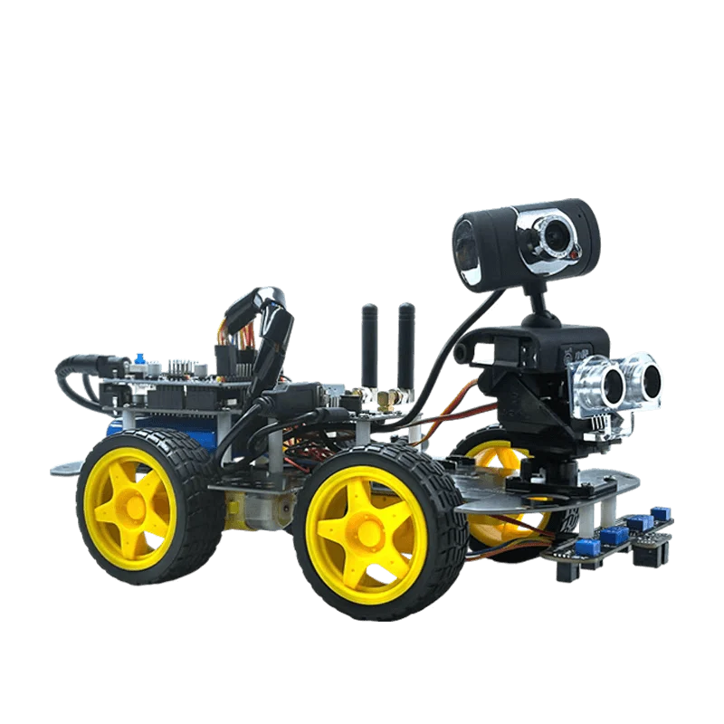

Del circuito
al programa.
Una mesa para conectar tus componentes. Un editor para darles instrucciones. Elige por dónde empezar.

Circuitos · Bloques · C++
Una mesa para conectar tus componentes. Un editor para darles instrucciones. Elige por dónde empezar.